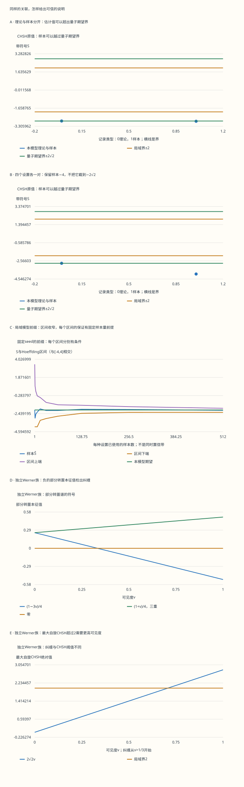

本页目录
量子信息 I · 从一个 qubit 到可检验的 Bell 关联
前置：复向量、内积、张量积与密度矩阵；遇到约化态可回看 密度矩阵与纠缠。这一课要回答：怎样从一个矩阵算出实际测量概率？为什么纠缠、CHSH 违反和某次样本越界是三件不同的事？
无脚本对照：五幅图读取下表同一份六组记录。样本的代数范围是[-4,4]，并不被截到理论量子界。区间保证需要正文列出的固定、独立抽样条件。

| 预设 | 每设置n | 参照v | 本模型理论S | 样本Ŝ | Hoeffding区间与[-4,4]相交 |
|---|---|---|---|---|---|
| singlet最优角 | 512 | 1 | -2.82842712 | -2.8515625 | [-3.0916432, -2.6114818] |
| 局域模型 | 512 | 1 | -2 | -2.04296875 | [-2.28304945, -1.80288805] |
| 每设置一对 | 1 | 1 | -2.82842712 | -4 | [-4, 1.43240606] |
| 没有观测 | 0 | 1 | -2.82842712 | 未定义 | 未定义 |
| 纠缠但无自旋CHSH违反 | 512 | 0.5 | -1.41421356 | -1.4765625 | [-1.7166432, -1.2364818] |
| Werner可分边界 | 512 | 0.333333333 | -0.942809042 | -1.0234375 | [-1.2635182, -0.783356802] |
下载六组完整固定记录。包含每一对的伪随机状态、结果、完整计数、区间和矩阵；经典模型的v只属于独立Werner参照。
1. 一个 qubit 的两个振幅，不是两个可同时读出的数
写 \(|\psi\rangle=\alpha|0\rangle+\beta|1\rangle\)，要求 \(|\alpha|^2+|\beta|^2=1\)。在 \(Z\) 基测一次，只得到 0 或 1，概率分别为两个模平方。为了估计概率，需要许多次同样的制备；一只未知 qubit 不会把其连续参数全部交给你。
整体乘 \(e^{i\gamma}\) 不改变任何测量概率。选去整体相位后，纯态可写为 \(\cos(\theta/2)|0\rangle+e^{i\phi}\sin(\theta/2)|1\rangle\)。相对相位仍然重要：\(|+\rangle=(|0\rangle+|1\rangle)/\sqrt2\) 与 \(|-\rangle=(|0\rangle-|1\rangle)/\sqrt2\) 在 \(Z\) 基都各半，在 \(X\) 基却能完美区分。
这也解释了“叠加”和“随机选一个基态”的差别。纯态 \(|+\rangle\langle+|\) 有非零非对角元；各半随机选 \(|0\rangle\)、\(|1\rangle\) 得到 \(I/2\)。两者在某一种测量下相同，不代表它们是同一个态。
2. Bloch 球把正定性、概率和旋转连起来
Pauli 矩阵为 \(X=\begin{pmatrix}0&1\\1&0\end{pmatrix}\)、\(Y=\begin{pmatrix}0&-i\\i&0\end{pmatrix}\)、\(Z=\operatorname{diag}(1,-1)\)。任意单 qubit 密度矩阵都能展开为
为什么？Pauli 代数给 \((\mathbf r\cdot\boldsymbol\sigma)^2=|\mathbf r|^2I\)，而这一矩阵的迹为零。因此它的两个本征值是 \(\pm|\mathbf r|\)。于是 \(\rho\succeq0\) 等价于 \(|\mathbf r|\le1\)，纯态对应球面，最大混合态对应球心。
沿单位向量 \(\mathbf n\) 测自旋，结果编码为 \(s=\pm1\)，投影算符 \(P_s=(I+s\mathbf n\cdot\boldsymbol\sigma)/2\)。利用 \(\operatorname{tr}(\sigma_i\sigma_j)=2\delta_{ij}\)，得到 \(p_s=\operatorname{tr}(\rho P_s)=(1+s\mathbf r\cdot\mathbf n)/2\)。概率来自点积，不必记一张角度表。
单比特酉门通过 \(\rho\mapsto U\rho U^\dagger\) 作用。\(U=\exp(-i\omega\mathbf n\cdot\boldsymbol\sigma/2)\) 把 Bloch 向量绕 \(\mathbf n\) 旋转 \(\omega\)。Hadamard 门 \(H=(X+Z)/\sqrt2\) 满足 \(HZH=X\)：它把 \(Z\) 基的确定性搬到 \(X\) 基。
展开解答：同样的 Z 计数，怎样认出相对相位？
\(|+\rangle\) 的 Bloch 向量是 \((1,0,0)\)，\(|-\rangle\) 是 \((-1,0,0)\)，\(I/2\) 是零向量。取 \(\mathbf n=(0,0,1)\)，三者都得到各半概率；取 \(\mathbf n=(1,0,0)\)，得到的 \(+\) 概率依次是 1、0、\(1/2\)。这说明换基测量能读取相对相位造成的干涉，而不能读取整体相位。
3. 两个 qubit：先写清张量顺序，再谈纠缠
本课双体基顺序固定为 \(|00\rangle,|01\rangle,|10\rangle,|11\rangle\)。第一位属于 Alice，第二位属于 Bob。CNOT 以第一位为控制时，把 \(|a,b\rangle\) 变为 \(|a,a\mathbin\oplus b\rangle\)。因此从 \(|00\rangle\) 出发，先在第一位做 \(H\) 再做 CNOT，就得到 \(|\Phi^+\rangle=(|00\rangle+|11\rangle)/\sqrt2\)。
四个 Bell 态 \(|\Phi^\pm\rangle=(|00\rangle\pm|11\rangle)/\sqrt2\)、\(|\Psi^\pm\rangle=(|01\rangle\pm|10\rangle)/\sqrt2\) 是正交基。后面的自旋关联实验使用 singlet \(|\Psi^-\rangle\)，传态协议使用 \(|\Phi^+\rangle\)。不要把两者的关联符号混用。
“单比特门加 CNOT 通用”说的是可组合的电路生成能力。允许所有连续单比特门时，有限维酉可分解成有限电路；若只允许特定有限门集，就要另证其生成的集合足够稠密，并讨论逼近精度和门数。通用不等于任意任务都能高效完成。
4. 纯态纠缠可以从一次 SVD 看出来
把双体纯态的系数排成矩阵 \(M\)：\(|\psi\rangle=\sum_{ij}M_{ij}|i\rangle|j\rangle\)。SVD 给出 Schmidt 分解
若采用 \(M=U\Sigma V^\dagger\) 的 SVD 约定，第二侧的 \(|v_j\rangle\) 要取 \(V\) 第 \(j\) 列的逐项共轭。只有一个非零 \(p_j\) 才是乘积态；出现两个或更多，任何局部换基都消不掉这一结构。双体纯态的纠缠熵是 \(-\sum_jp_j\log_2p_j\)，它等于任一边约化态的熵。
对混合态则应使用可分性的定义：\(\rho_{AB}=\sum_jw_j\rho_A^{(j)}\otimes\rho_B^{(j)}\)，\(w_j\ge0\) 且和为 1。可分态允许经典关联。局部态很混，不足以认定纠缠。
展开解答：局部熵都是 1，整体为什么可能完全不同？
\(|\Phi^+\rangle\) 的约化态是 \(I/2\)，整体却是纯态。另一方面，\(\rho_{\rm cl}=(|00\rangle\langle00|+|11\rangle\langle11|)/2\) 也有相同约化态，但它已经写成乘积态的概率混合，是可分的。两者单边熵都是 1；只有第一个能用“纯态约化熵”直接度量纠缠。其非对角关联项也不同。
5. 不可克隆约束的是未知态的通用复制器
先假设用一个酉门把 \(|\psi\rangle|0\rangle\) 变成 \(|\psi\rangle|\psi\rangle\)。对两个输入态取内积，会要求 \(s=s^2\)，其中 \(s=\langle\psi|\phi\rangle\)。若两个态既不正交也不属于同一射线，这不可能。
加入环境也不能制造确定性完美通用克隆器。纯输入的两个副本若都是完美纯态，扩展输出必与环境分开；内积保持要求 \(s=s^2\langle e_\psi|e_\phi\rangle\)。取模后 \(|s|\le|s|^2\)，与 \(0<|s|<1\) 矛盾。正交的一组已知态可以复制；这没有违反定理。
测量不可逆也要指定对象。例如丢弃 \(Z\) 测量结果后，\(|+\rangle\) 和 \(|-\rangle\) 都变成 \(I/2\)。一个确定性恢复通道不可能把同一个输入同时恢复成两个不同态。条件性弱测量撤销并不是这种通用恢复器。
6. 隐形传态：四个分支把协议算到底
现在三位的顺序固定为输入 \(Q\)、Alice 的辅助位 \(A\)、Bob 的位 \(B\)。初态是 \(|\psi\rangle_Q\otimes|\Phi^+\rangle_{AB}\)。Alice 做 \(\operatorname{CNOT}_{Q\to A}\)，再在 \(Q\) 上做 \(H\)。直接展开八维向量后，可以收集为
Alice 测量得到 \(q,a\)，每个分支的概率都是 \(1/4\)。Bob 收到这两个经典比特后施加 \(Z^qX^a\)，恰好消去条件变换。注意矩阵从右向左作用；位顺序不同，校正表的书写顺序也会不同。
在 Bob 尚未收到经典信息时，对四个结果平均得到 \(\frac14\sum_{q,a}X^aZ^q\rho Z^qX^a=I/2\)。因此他不能从本地测量知道输入。收到结果后才恢复未知态；Alice 的原输入已被测量，预共享纠缠也已消耗，没有多出一份副本。
协议对未知外部参考系仍有效：把输入写成 \(|0\rangle|r_0\rangle+|1\rangle|r_1\rangle\)，以上展开逐项成立。每个分支校正后保留与参考系的原有相关；这才是传送一个量子系统所需的通道性质。可对照 Watrous 的完整协议，其位顺序需与本课分别核对。
展开解答：四种结果分别是什么？
按本课 \((q,a)\) 顺序，00、01、10、11 对应 Bob 的未校正态依次为 \(|\psi\rangle,X|\psi\rangle,Z|\psi\rangle,XZ|\psi\rangle\)。校正依次为 \(I,X,Z,ZX\)。最后一个用 \(ZX\,XZ=I\)；不是忽略顺序凑出一个门名。每个未归一化分支带系数 \(1/2\)，范数平方为 \(1/4\)，与输入振幅无关。
7. 无信号：平均所有远端结果以后，本地态不变
Bob 对自己的一边做任意迹保持量子操作，Kraus 算符满足 \(\sum_jK_j^\dagger K_j=I\)。检验 Alice 端任意可观测量 \(M\)：
第一步用全迹的循环性，第二步用迹保持。因此 Alice 的所有测量分布都不变，即约化态不变。若 Bob 只保留某个测量结果对应的子样本，条件态可以改变；Alice 要识别那个子样本，仍需要收到经典信息。
无信号只约束边缘分布，不要求联合分布可分解。后面会看到，同样的两个 \(1/2\) 边缘，可以伴随随角度变化的强关联。
8. CHSH 的局域界为什么是 2？
Alice 选 \(a\) 或 \(a'\)，Bob 选 \(b\) 或 \(b'\)，各输出 \(\pm1\)。局域模型把结果写成 \(A(a,\lambda)\)、\(B(b,\lambda)\)；共享变量的分布与测量设置独立。局部随机性也可并入 \(\lambda\)。
对每个固定 \(\lambda\)，\(B+B'\) 与 \(B-B'\) 中恰有一个是零，另一个为 \(\pm2\)。于是
最后一步是对同一个 \(\lambda\) 分布取平均。实验并没有对同一粒子对同时测四套不兼容设置；模型的局域赋值和设置独立性让四种平均能用这条不等式连接。若样本被设置相关地筛选，或者不同设置面对不同制备分布，就不能悄悄沿用这一证明。
实验里的经典对照更具体：均匀抽取 \(\lambda\in[0,2\pi)\)，\(A=\operatorname{sgn}\cos(\lambda-a)\)、\(B=-\operatorname{sgn}\cos(\lambda-b)\)。若两轴的最小夹角为 \(d\in[0,\pi]\)，符号不同的弧段占比给出 \(E_{\rm local}=-1+2d/\pi\)。它是局域模型的一个实例，不代表所有局域模型都只能画这条曲线。
9. 量子界是算符界，单次样本不是算符期望
先取二值投影测量 \(A^2=A'^2=B^2=B'^2=I\)，并让两方算符作用于不同系统。CHSH 算符 \(\mathcal B=A\otimes(B+B')+A'\otimes(B-B')\) 满足
展开平方后，交叉项中的反对易组合抵消，留下两个交换子；\(\|[A,A']\|\le2\) 来自每个可观测量范数为 1。因此任意态的 \(|\operatorname{tr}(\rho\mathcal B)|\le2\sqrt2\)。二值一般测量可通过局部投影扩张得到相同界；这里没有把实验限制成只有二维才成立的经验规律。
singlet 满足 \(\langle\sigma_i\otimes\sigma_j\rangle=-\delta_{ij}\)，所以 \(E(\mathbf a,\mathbf b)=-\mathbf a\cdot\mathbf b\)。在 \(xz\) 平面用自旋轴角度表示，\(E=-\cos(a-b)\)。最优设置 \((a,a',b,b')=(0,90,45,-45)^\circ\) 给前三项 \(-1/\sqrt2\)、第四项 \(+1/\sqrt2\)，本课符号下 \(S=-2\sqrt2\)。
测量结果 \(s,t=\pm1\) 的联合概率由投影乘积得到 \(p(s,t)=(1+stE)/4\)，两端边缘都是 \(1/2\)。这里角度是自旋轴角度；不要与偏振基向量常用的双角公式混淆。
展开解答：为什么一轮数据可以出现绝对值 4？
若四种设置各只抽一对，四个相关估计都只能取 \(\pm1\)。恰好前三个乘积为 -1、最后一个为 +1，就得到 \(\hat S=-4\)。这是四组独立结果的组合，未必来自同一个隐藏变量赋值；它也不是量子算符的精确期望。理论界约束分布期望，统计论负责样本怎样接近期望。把图上的 -4 截到 \(-2\sqrt2\) 会隐藏这一差别。
10. 有纠缠，但不违反这类 CHSH：一个可算到底的例子
给 singlet 混入白噪声，得到 Werner 族 \(\rho_v=v|\Psi^-\rangle\langle\Psi^-|+(1-v)I_4/4\)，\(0\le v\le1\)。其自旋关联变为 \(-v\mathbf a\cdot\mathbf b\)，所以单副本二值自旋投影测量的最大 CHSH 值为 \(2\sqrt2v\)。
可分态做一边部分转置后仍为半正定矩阵：转置保持每个局部密度矩阵的半正定性，概率混合也保持。对本族直接换矩阵指标，可算得
因此 \(v>1/3\) 一定纠缠。反过来，\(v=1/3\) 恰是沿 \(\pm x,\pm y,\pm z\) 六个方向的相反单比特乘积态的等权混合；更小的 \(v\) 再混入 \(I_4/4\) 即可。于是这一族在 \(v\le1/3\) 可分，\(v>1/3\) 纠缠；但要违反上述 CHSH，需要 \(v>1/\sqrt2\)。部分转置判据及本例可对照 Peres 原论文。一般高维不能把 PPT 自动当作可分。
展开解答：把 v=1/3 的可分构造写出来
对 \(P=X,Y,Z\) 和 \(s=\pm1\)，取 \(\rho_{P,s}=(I+sP)/2\)。六个 \(\rho_{P,s}\otimes\rho_{P,-s}\) 的平均为 \(\frac14[I\otimes I-\frac13(X\otimes X+Y\otimes Y+Z\otimes Z)]\)，就是 \(\rho_{1/3}\)。低于阈值时 \(\rho_v=3v\rho_{1/3}+(1-3v)I_4/4\)。系数非负且和为 1，给出了实际分解，而不只是一句判据名称。
展开解答：v=1/2 说明了什么，又没有说明什么？
最小部分转置本征值为 \(-1/8\)，所以纠缠；最大自旋 CHSH 是 \(\sqrt2<2\)，所以这类测量不违反 CHSH。不能据此推断所有 Bell 不等式、局部过滤或多副本协议都没有可能揭示其他性质。“这套检验未检出”要连同设置族和操作范围一起说。
11. 有限样本：给出会变宽的区间，而不是零误差幻觉
每个设置的四个计数为 \(N_{++},N_{+-},N_{-+},N_{--}\)，总数 \(n\)。先逐行计算 \(\hat E=(N_{++}+N_{--}-N_{+-}-N_{-+})/n\)，再带符号相加。\(n=0\) 时估计未定义，不能补零。
常用的 plug-in 标准误差是 \(\sqrt{\sum_i(1-\hat E_i^2)/(n_i-1)}\)，要求各 \(n_i\ge2\)。它是描述性读数；若每行结果全同，就会给出零，不能据此认定真实误差为零。
本实验另列一个保守的有限样本区间。假定四组抽样独立、每组来自固定分布，样本量在看数据前确定。把每个乘积 \(AB\in[-1,1]\) 按本行系数 \(\pm1/n_i\) 加权，Hoeffding 界给
常数从哪里来？单个加权变量的值域长度是 \(2/n_i\)，全部值域平方之和是 \(4\sum_i1/n_i\)。指数矩方法使用 \(\mathbb E e^{u(X-\mathbb EX)}\le e^{u^2(b-a)^2/8}\)：对数指数矩的二阶导数是指数倾斜分布下的方差；任何支持在 \([a,b]\) 的分布，其方差都不超过到区间中点的均方距离，后者至多 \((b-a)^2/4\)。从零点的函数值和一阶导数均为零出发，积分两次就得到这个上界。再对独立变量相乘并优化 \(u\)，分别控制两尾。每行同为 \(n\) 时，半径是 \(\sqrt{8\log40/n}\)。
原始区间 \([\hat S-\epsilon_{95},\hat S+\epsilon_{95}]\) 与代数范围 \([-4,4]\) 的交集仍保持这一覆盖保证。交集不会改动 \(\hat S\)，也不会把它压回理论局域界或量子界。界较保守是为了在少样本和全同结果下仍有明确含义。
这里的概率保证属于理想随机抽样模型。固定 seed 的伪随机重放是计算演示；选择喜欢的 seed、看到越界就停止、反复挑角度或挑子样本，都不自动保留这个固定设计的保证。前缀图中的每个区间也不是一条同时有效的置信带。
展开解答：n=1、Ŝ=-4，区间如何保持诚实？
四行各一个结果时，plug-in 标准误差未定义。Hoeffding 半径 \(\sqrt{8\log40}\approx5.4324\)，原始区间约为 \([-9.4324,1.4324]\)；与代数范围相交后为 \([-4,1.4324]\)。它很宽，但并没有假装一个极端样本已经精确定位了期望，也没有改掉图中的 -4。
12. 从课内实验走到真实检验
操作时先比较经典对照与 Werner 模型，再保持角度不变调整样本量。固定 seed 让每次计算可重放；观察图里的理论值、样本值和区间分别怎样变化。再把 \(v\) 调到 \(1/2\)，同时核对密度矩阵、部分转置谱和 CHSH 阈值。经典模型旁的 Werner 扫描始终是独立参照，不是对经典抽样赋予一个量子密度矩阵。
无信号也要单独看：比较 Alice 同一轴在 Bob 两种设置下的边缘率，而不是比较两条相关函数。理想模型的边缘都为 \(1/2\)；本次有限计数可以不同。只有给定抽样模型和误差控制以后，样本差异才有统计意义。
真实 Bell 检验还要处理设置选择、探测与筛选、时空分离、装置记忆、统计检验和停止规则。本课既没有模拟这些装置，也没有把重放的数据叫作实验认证。设备无关密码与量子网络会进一步利用关联建立可验证保证，但不能从一个漂亮的 \(|\hat S|>2\) 读数跳过这些条件。
展开解答：无信号为什么不等于没有关联？
singlet 沿同一轴测量，联合结果只有 \(+-\) 与 \(-+\)，各半；两方都各半随机，却完全反相关。轴正交时四种联合结果各 \(1/4\)，相关为零，但边缘仍各半。Bob 换轴改变的是联合结构；Alice 不知道 Bob 的结果与设置分组时，本地看到的仍是同一边缘分布。
下一课：量子算法将讨论这些状态与门怎样组成计算过程，以及查询次数、门数和输出信息量为什么需要分开核算。